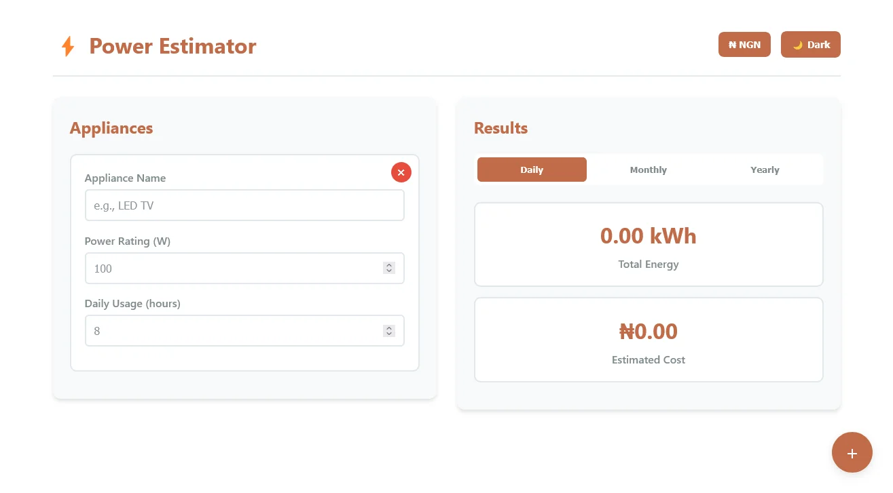
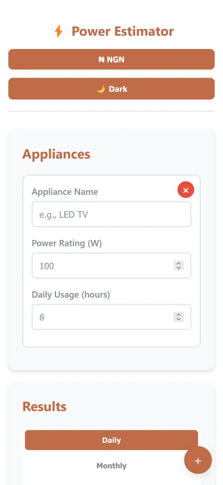
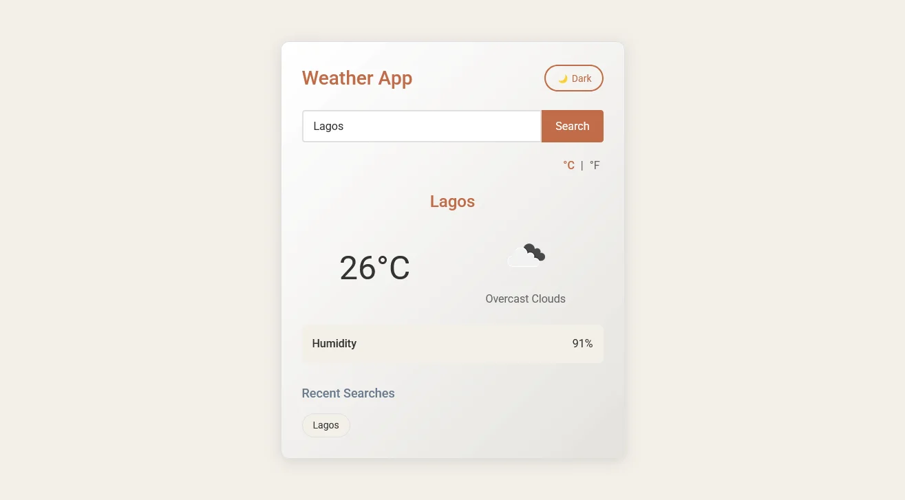
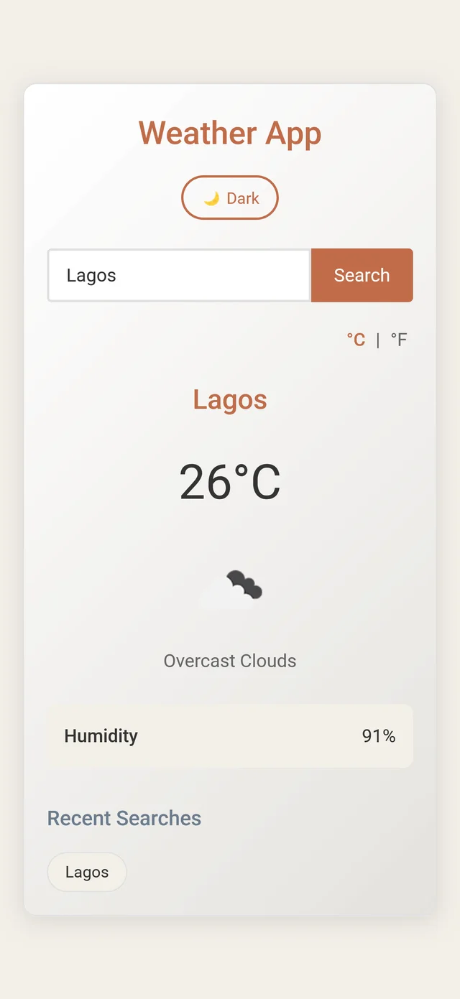
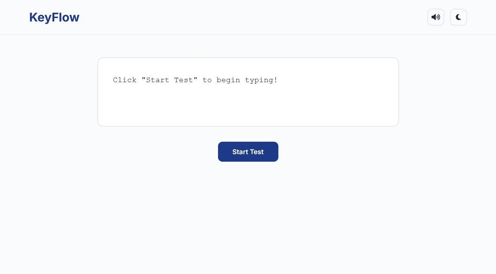
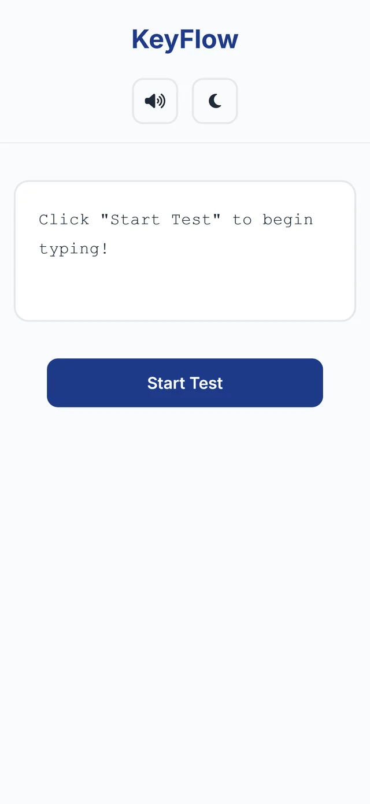

Chinomnso Ugba
I turn designs into clean, responsive websites. I've mentored new developers, taught programming to students of different ages, and I'm looking for a junior front-end role.
Selected work
Small, practical web apps built with plain HTML, CSS and JavaScript.
-


PowerPlanner
A mobile-first app for tracking household electricity costs. Add appliances with their wattage and daily use to see energy use and cost in naira, with daily, monthly and yearly views and a light and dark mode.
Live site (opens in a new tab) Source code (opens in a new tab)
-


Weather App
An early project built around a third-party weather API. Search any city for its temperature, conditions and humidity, switch between °C and °F, revisit recent searches and use dark mode.
Live site (opens in a new tab) Source code (opens in a new tab)
-


KeyFlow
A typing speed test built around keyboard input events, with a start button, a sound toggle and a dark mode.
Live site (opens in a new tab) Source code (opens in a new tab)
Experience
Front-end work, mentoring and teaching.
-
Jan 2026 to present
Computer and Digital Technology Teacher
St. Anthony's Catholic Comprehensive Institute, Agulu
- Teach Computer Studies and Digital Technology to secondary school students through structured lessons and practical examples.
- Prepare lesson notes, activities and assessments suited to each class's level.
-
Oct 2025 to Apr 2026
Private Scratch Programming Tutor
Independent
- Taught programming fundamentals to a young learner over about six months, covering events, loops, conditionals and variables.
- Guided them to build interactive games with keyboard controls, scoring and timers, and to experiment on their own.
-
Sep 2025
Frontend Developer
Collaborative Web3 hackathon project
- Worked in a team of about six on a token-based agriculture investment concept.
- Built frontend pages explaining the investment idea and the token to users.
-
Jul 2025
Freelance Frontend Developer
Independent client project
- Built a three-page website for a client using HTML, CSS and JavaScript, with CSS Grid for the layouts.
- Delivered the site within the scope of the client's assignment.
-
May 2024 to Oct 2024
Frontend Development Mentor
Intern training, SecureCodes Software
- Guided two interns through separate six-week training periods, teaching HTML, CSS and JavaScript with an introduction to React and Tailwind CSS.
- Supported them as they moved from the basics to small projects such as portfolio sites and news layouts.
-
Mar 2023 to Feb 2025
Frontend Development Intern
SecureCodes Software, Awka
- Supported operations and administration at a company that builds school portal systems.
- Organised school-related information and contributed to a few programming tasks.
About me
I've loved computers for as long as I can remember. I studied Electronics and Computer Engineering at UNIZIK, but it was beautiful, interactive websites that made me want to build my own, and that's how I got into front-end development.
I've built personal projects like PowerPlanner and a website for a freelance client, and I interned at SecureCodes Software in Awka, where I later mentored two interns. Since January 2026 I've also taught Computer Studies and Digital Technology to secondary school students, from JS1 to SS3. It's outside coding, but it gives me hands-on experience and sharpens my wider computer skills. I keep building on the side and growing my front-end skills with React, Tailwind CSS and GSAP.
I'm looking for a front-end role, ideally remote, where I can keep learning to build better interactive sites. Part-time, full-time and contract roles all work for me.
Away from the screen, I play chess, read mostly non-fiction, game a bit and listen to a lot of hip-hop and rock.
Comfortable with
- HTML
- CSS and CSS Grid
- JavaScript
- Responsive design
- Git and GitHub
- React
- Tailwind CSS
Still learning
- GSAP
- TypeScript
- Next.js
Get in touch
I'm open to remote front-end roles. Email me let's connect.